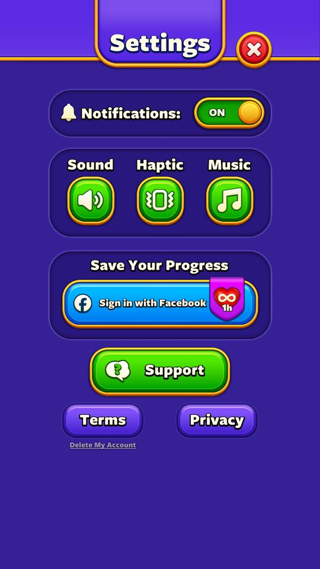

Nguồn mới và việc tiếp theo · Cài đặt (Settings)
Kiểm kê toàn bộ nút Settings, cuộn nếu có; mở popup Restore hoặc liên kết rồi hủy; kiểm tra nhãn hỗ trợ/điều khoản và bố cục.
UC ưu tiên: UC-09 Xem Điều khoản và Chính sách bảo mật, UC-13 Liên kết tài khoản từ Settings, UC-14 Khôi phục giao dịch đã mua, UC-15 Liên hệ hỗ trợ, UC-17 Bố cục toggle theo thiết bị
Gate runtime: chờ thiết bị phục hồi và xác nhận lại entry; chưa có execution mới ngày 16/11.
Liên kết config: exact_model_source_association
Đủ entry, precondition và 908 UC · GDD hiện tại đầy đủ · Kết luận mã và phần chưa chứng minh
Segment/A/B: default và nhãn variant chỉ là bằng chứng cấu hình; chưa có assignment, phân bổ traffic hoặc uplift mới.
Hồ sơ Settings: 25 config, 7 gap, 1/18 UC có ảnh tham chiếu. Cache và instance ghi ngày tại nguồn; kết quả kiểm chứng mới nằm trong các case dưới đây; không áp dụng cho mọi UC.
Đủ 11 mục đánh giá cho hồ sơ này — data / flow / UC / ảnh / segment / AB / kiến trúc / phần thiếu
Theo dõi toàn bộ 58 danh mục · Full hồ sơ đối soát · Tải GDD JSON đầy đủ · Metadata UI và bảng thưởng đầy đủ
| Mục | Trạng thái theo bằng chứng |
|---|---|
| purpose | documented_static_scope |
| unlock | described_historical_conditions_runtime_boundary_unverified |
| entry_flow | documented_paths_not_all_executed |
| config | source_bound_catalog_present |
| reward | delegated_or_no_direct_reward_in_this_scope |
| use_cases | reviewed_branches_only |
| screenshots | new_case_evidence_available |
| runtime_actual | observed_subset_offline_fixture |
| segment_ab | not_identified_in_sources |
| storage_backend_analytics | See full JSON |
| remaining_next_step | See full JSON |
Đã rà hồ sơ không đồng nghĩa mọi nhánh runtime đã pass. Nguồn và bước còn lại nằm trong JSON đầy đủ.
Segment và A/B của feature — 0 dòng có liên hệ nguồn
No matchingrow does not prove no segmentation/AB. Rewardbucketfalsepositives remain explicitly classified.
Consumer, matching basis, selector và giới hạn: full dữ liệu riêng của feature · review chung.
Playtest 15/11 · offline fixture — 1 case, mở xem ảnh và kết quả
MS-R15-META01 — Bốn toggle: OFF, restart, khôi phục ON
UC: UC-01, UC-02, UC-05, UC-07 · verified_observed_branch
Cả bốn OFF giữ qua restart. SoundModel isSoundEffectOn/isMusicOn=false; VibrationModel isVibrationOn=false; NotificationModel isNotificationOn=false. Bật lại đều true. settings_ledger.json có trạng thái từng bước.
Giới hạn: Xác minh UI/model/persistence; chưa xác minh âm thanh phát thực, rung vật lý hay delivery thông báo.


Đối chiếu code / asset · 15/11 — 5 finding
Code/asset 0.0.3063, cache ghi ngày và asset bundle đã đọc từ thiết bị 0.0.3129; mỗi finding giữ đúng nguồn/build, không nâng kiểm tra file thành runtime pass.
MS-RA-019 — URL Terms/Privacy/Support nằm trong prefab hoặc cấu hình, chưa trích ra. · resolved_historical_snapshot
Đã trích mục tiêu công khai của các nút trong native 0.0.3063: Privacy dùng https://grand.gs/privacy; Terms dùng https://grand.gs/terms; Support dùng người nhận mailto help@grand.gs. Không mở URL hoặc gửi email trong lượt audit này.
Còn lại:
MS-FDG-019 — RateUsConfig.RateUsLevels do remote config quyết định, không có giá trị trong build. · resolved_historical_snapshot
Đã trích toàn bộ field/value của RateUsConfig từ default0.0.3063 và cache lịch sử hiện có. Nhận định không có giá trị trong client đã được đối chiếu bằng file thật; không xác nhận effective runtime.
Còn lại: Full historical data answered; current effective selection and full runtime remain unverified.
MS-Settings-G003 — · resolved_static_snapshot
Đã trích toàn bộ field/value của RateUsConfig từ default0.0.3063 và cache lịch sử hiện có. Nhận định không có giá trị trong client đã được đối chiếu bằng file thật; không xác nhận effective runtime.
Còn lại: Kiểm chứng effective config/asset và nhánh runtime trên đúng build nếu cần.
Finding phía trên đã được bổ sung/thu hẹp bởi MS-FDG-019 ở đầu phần này.
MS-Settings-G001 — · partial_static_reconciliation
Đã trích 115 sound/music row và GUID/clip path/hash; SoundType22 bị lặp. Row không chứa Volume; chưa gán volume mặc định từ suy đoán.
Còn lại: Toàn bộ115sound/music row và GUID đã có; SoundConfig row không chứa Volume. Chưa xác minh AudioSource/mixer/service volume áp dụng hoặc cách xử lý duplicate SoundType22.
MS-Settings-G002 — · resolved_static_snapshot
Resolve đủ 16/16 vibration ref; xuất đầy đủ Android/iOS config, delays/feedback rawhex và int32little-endian, Priority. Không chứng minh hardware output.
Còn lại: Kiểm chứng effective config/asset và nhánh runtime trên đúng build nếu cần.
Cài đặt (Settings)
Trang tuỳ chọn gom âm thanh, nhạc, rung, thông báo, liên kết tài khoản, pháp lý và hỗ trợ.
Mô tả
- Code0.0.3063 có PageType.Settings=5 và SettingsPopUp; quan sát15/11 trên0.0.3129 là popup qua bánh răng, tab dưới cùng bên phải là Collection.
- Các toggle: hiệu ứng âm thanh, nhạc nền, rung và thông báo đẩy.
- Popup còn có liên kết/ngắt Facebook và Apple, khôi phục giao dịch, Điều khoản, Chính sách bảo mật, liên hệ hỗ trợ và xoá tài khoản.
- Âm thanh chia hai kênh riêng qua AudioMixer: SoundModel.IsSoundEffectOn và IsMusicOn, với 111 giá trị SoundType và 4 MusicType.
- Rung dùng hệ phản hồi xúc giác riêng cho từng nền tảng: Android ánh xạ AndroidHapticFeedback, iOS dùng IosFeedbackConfig.
- Mỗi loại rung là một ScriptableObject 'Vibration' với mảng Delays và Priority; VibrationConfigs.asset ánh xạ 16 VibrationType.
- Ngôn ngữ tự nhận theo mã ngôn ngữ máy trong 11 ngôn ngữ được hỗ trợ (English … Korean).
- Module còn chứa luồng đồng ý quảng cáo (Google UMP + ATT/IDFA) và luồng xin đánh giá cửa hàng theo danh sách level.
- Bộ toggle hiển thị thay đổi theo thiết bị: SettingsPopupFeedbackView có 4 biến thể từ 1 đến 3 toggle.
Còn thiếu / chưa xác minh
Mở khóa & điểm vào
Có ngay từ đầu. Bộ toggle hiển thị thay đổi theo thiết bị và cấu hình: SettingsPopupFeedbackView có 4 biến thể (ShowSoundToggle, ShowSoundAndVibrationToggles, ShowSoundAndMusicToggles, ShowSoundAndVibrationAndMusicToggles) — máy không hỗ trợ rung (VibrationService.IsVibrationSupported() = false) thì ẩn toggle rung; nhạc nền bật theo remote config 'IsMusicEnabled'; giá trị rung mặc định theo 'IsVibrationOn'. Nút Restore Purchase chỉ hiện khi 'RestorePurchaseEnabled'.
Điểm vào:
- Trang Settings trong SwipeMenu (PageType.Settings = 5)
- Nút bánh răng mở SettingsPopUp (SettingsButton)
- Popup điều khoản khi mở game lần đầu (TermsOfUseController.Show)
- Form đồng ý quảng cáo Google UMP khi khởi động (GoogleUmpService.InitializeGoogleMobileAdsConsent)
- Popup đánh giá tự bật ở các level cấu hình (RateUsService.TryShowRateUsPopup)
Cách hoạt động
- SettingsController.Awake() gắn ba toggle: _soundToggle (SimpleToggle), _vibrationToggle (SimpleToggle) và _notificationToggle (RadioToggle).
- SettingsPopupFeedbackView chọn bố cục theo thiết bị: ShowSoundToggle, ShowSoundAndVibrationToggles, ShowSoundAndMusicToggles hoặc ShowSoundAndVibrationAndMusicToggles.
- OnSoundToggleChanged(toggle) / OnMusicToggleChanged(toggle) gọi SoundService, đổi SoundModel.IsSoundEffectOn / IsMusicOn và lưu qua ISaveLoad<SoundModel>.
- SoundService.OnSoundEffectPreferenceChanged / OnMusicPreferenceChanged chỉnh AudioMixer tương ứng và gọi StopMusic() / PlayMusic(MusicType) khi cần.
- OnVibrationToggleChanged(toggle) đặt VibrationModel.IsVibrationOn qua VibrationService, MarkDataForLateUpdate() rồi LateUpdate() lưu.
- OnNotificationToggleChanged(toggle) chuyển tiếp sang NotificationService (xem tính năng Notifications).
- Khi gameplay phát tiếng, SoundService dùng PlaySoundEffect(SoundType), PlayOneShotSFX(SoundType) và PlayLoopingSoundEffect / StopLoopingSoundEffect cho tiếng lặp (BoilingLoop, CoinsLoop).
- Hai hàm ngẫu nhiên hoá tránh nghe lặp: PlayRandomSoundEffect(pourAmount) chọn trong nhóm PourShort/PourMid/PourLong 1–8, PlayRandomIceSoundEffect() chọn trong Ice1–Ice4 (68–71).
- Rung: OnPlayVibration(VibrationType) tra VibrationConfigs.GetVibration(vibrationType) lấy ScriptableObject Vibration tương ứng.
- FeedbackRunner chạy Feedback với FeedbackConfig{Delays[], Priority}; Android dùng AndroidFeedbackConfig.Feedbacks (mảng AndroidHapticFeedback), iOS dùng IosFeedbackConfig.
- Ngôn ngữ: LocalizationService.Initialize() đọc mã ngôn ngữ hệ thống, GetLanguage(languageCode) ánh xạ sang enum Language, GetCultureCode(language) đặt CultureInfo cho định dạng số/ngày.
- I2 Localization (LocalizationManager, I2Languages.asset) cung cấp chuỗi cho toàn bộ 11 ngôn ngữ.
- Khi khởi động, GoogleUmpService.InitializeGoogleMobileAdsConsent(adService, idfaService) → GatherConsent() → LoadAndShowConsentForm() hiện form đồng ý quảng cáo.
- IdfaService.RequestATTAndCacheIdfa() xin quyền theo dõi trên iOS và lấy Google Ad Id trên Android.
- Đánh giá: RateUsService.ShouldShow() so level hiện tại với RateUsConfig.RateUsLevels ([20, 60, 150, 300] mặc định) và PlayerPrefs 'FirstShowRateUsPopup'.
- TryShowRateUsPopup() dùng Google Play ReviewManager (in-app review); nếu thất bại thì đặt _isRateUsPopupFailedToOpen.
Luồng chi tiết theo code
SettingsController.Awake() gắn ba toggle: _soundToggle (SimpleToggle), _vibrationToggle (SimpleToggle) và _notificationToggle (RadioToggle). OnSoundToggleChanged(toggle) và OnMusicToggleChanged(toggle) gọi SoundService, làm SoundModel.IsSoundEffectOn / IsMusicOn thay đổi và lưu qua ISaveLoad<SoundModel>; SoundService.OnSoundEffectPreferenceChanged/OnMusicPreferenceChanged chỉnh AudioMixer tương ứng và StopMusic()/PlayMusic(MusicType) khi cần. OnVibrationToggleChanged(toggle) đặt VibrationModel.IsVibrationOn qua VibrationService, MarkDataForLateUpdate() rồi LateUpdate() lưu. OnNotificationToggleChanged(toggle) chuyển tiếp sang NotificationService (xem feature Notifications). Khi gameplay phát tiếng: PlaySoundEffect(SoundType), PlayOneShotSFX(SoundType), PlayLoopingSoundEffect/StopLoopingSoundEffect cho tiếng lặp (BoilingLoop, CoinsLoop) và hai hàm ngẫu nhiên hoá — PlayRandomSoundEffect(pourAmount) chọn trong pourAmountToSoundTypes (nhóm PourShort/PourMid/PourLong 1–8) và PlayRandomIceSoundEffect() chọn trong _iceSounds (Ice1–Ice4) — để rót nước và đập băng không nghe lặp. Rung: OnPlayVibration(VibrationType) tra VibrationConfigs.GetVibration(vibrationType) lấy ScriptableObject Vibration, rồi FeedbackRunner chạy Feedback với FeedbackConfig{Delays[], Priority}; Android dùng AndroidFeedbackConfig.Feedbacks (mảng AndroidHapticFeedback), iOS dùng IosFeedbackConfig. Ngôn ngữ: LocalizationService.Initialize() đọc mã ngôn ngữ hệ thống, GetLanguage(languageCode) ánh xạ sang enum Language, GetCultureCode(language) đặt CultureInfo cho định dạng số/ngày; I2 Localization (LocalizationManager, I2Languages.asset) cung cấp chuỗi. Đánh giá: RateUsService.ShouldShow() so level hiện tại với RateUsConfig.RateUsLevels và PlayerPrefs 'FirstShowRateUsPopup'; TryShowRateUsPopup() dùng Google Play ReviewManager (in-app review), thất bại thì đặt _isRateUsPopupFailedToOpen. Đồng ý quảng cáo: GoogleUmpService.InitializeGoogleMobileAdsConsent(adService, idfaService) → GatherConsent() → LoadAndShowConsentForm(); nếu quá _cancelInitializationTimeout = 2.5 giây thì huỷ để không chặn khởi động; IdfaService.RequestATTAndCacheIdfa() xin quyền theo dõi trên iOS và lấy Google Ad Id trên Android.
Ảnh chụp màn hình (1)
1 ảnh chụp trong game (LDPlayer, bản 0.0.3129, tài khoản thử level 321 → 351 (07/10/2026)). Bấm ảnh để phóng to; ảnh chụp lịch sử mở PNG gốc. Nhãn UC dẫn tới use case tương ứng.


 1 giờ mạng vô hạn), Support, Terms, Privacy, Delete My Account
1 giờ mạng vô hạn), Support, Terms, Privacy, Delete My AccountPhần thưởng
MỐC LEVEL XIN ĐÁNH GIÁ (RateUsConfig.json, client default)
| Mốc | Điều kiện | Hành động |
|---|---|---|
| Mốc 1 | Level 20 | Mở in-app review qua Google Play ReviewManager |
| Mốc 2 | Level 60 | Mở in-app review |
| Mốc 3 | Level 150 | Mở in-app review |
| Mốc 4 | Level 300 | Mở in-app review |
| LevelToShowRateUs | Level 35 | Giá trị riêng LevelToShowRateUs trong cùng file cấu hình |
BẢNG LOẠI RUNG (enum VibrationType → VibrationConfigs.asset)
| Mã | VibrationType | Asset cấu hình |
|---|---|---|
| 0 | None | - |
| 1 | ButtonClick | buttonclick.asset (Delays=[0] Priority=0 Feedbacks=[1] → VIRTUAL_KEY) |
| 2 | BottleSelect | bottleselect.asset |
| 3 | BottleFillStart | bottlefillstart.asset |
| 4 | BottleFillEnd | bottlefillend.asset |
| 5 | BottleDeselect | bottledeselect.asset |
| 6 | LevelWin | levelwin.asset |
| 7 | LevelLose | levellose.asset |
| 8 | LevelStart | levelstart.asset |
| 9 | RewardSitToPosition | rewardsittoposition.asset |
| 10 | CauldronSmoke | cauldronsmoke.asset |
| 11 | CauldronBottleWaterFallComplete | cauldronbottlewaterfallcomplete.asset |
| 12 | CurtainReveal | curtainreveal.asset |
| 13 | BlockerBreak | blockerbreak.asset |
| 14 | BlockerGenerator | blockergenerator.asset |
| 15 | BlockerGeneratorExplosion | blockergeneratorexplosion.asset |
| 16 | DrillStep | drillstep.asset |
NGÔN NGỮ HỖ TRỢ (enum Language)
| Mã | Ngôn ngữ | Ghi chú |
|---|---|---|
| 0 | English | Ngôn ngữ gốc |
| 1 | Turkish | - |
| 2 | Dutch | - |
| 3 | German | - |
| 4 | French | - |
| 5 | Italian | - |
| 6 | Portuguese | - |
| 7 | Spanish | - |
| 8 | Russian | - |
| 9 | Japanese | - |
| 10 | Korean | - |
NHẠC NỀN (enum MusicType)
| Mã | MusicType | Bối cảnh |
|---|---|---|
| 1 | Home | Màn hình chính |
| 2 | Gameplay | Trong màn chơi |
| 3 | ChampionsLeaguePreJoin | Trước khi vào Champions League |
| 4 | MiniGameTrident | Mini game Trident |
Số liệu chính
| Chỉ số | Giá trị | Nguồn |
|---|---|---|
| Số hiệu ứng âm thanh | 111 giá trị (None=0 … MiniGameItemMove=110) | Sound.Scripts.SoundType |
| Số bản nhạc nền | 4 | Sound.Scripts.MusicType |
| Số loại rung | 17 giá trị (None=0 … DrillStep=16) | Vibration.Scripts.VibrationType |
| Số trường trong VibrationConfigs.asset | 16 | VibrationConfigs.asset |
| Số ngôn ngữ hỗ trợ | 11 | Localization.Language |
| Số biến thể bố cục toggle | 4 | SettingsPopupFeedbackView |
| Trang Settings trong SwipeMenu | PageType.Settings = 5 | HomeUI SwipeMenu |
| Nhóm âm rót ngắn | PourShort1–8 (32–36, 51–53) | SoundType |
| Nhóm âm rót vừa | PourMid1–8 (37–41, 54–56) | SoundType |
| Nhóm âm rót dài | PourLong1–8 (42–46, 48–50) | SoundType |
| Nhóm âm đập băng | Ice1–Ice4 (68–71) | SoundType |
| Timeout khởi tạo đồng ý quảng cáo | 2.5 giây | GoogleUmpService._cancelInitializationTimeout |
| Level xin đánh giá (client default) | [20, 60, 150, 300] | RateUsConfig.json: RateUsLevels |
| LevelToShowRateUs | 35 | RateUsConfig.json: LevelToShowRateUs |
| Khoá PlayerPrefs đánh giá | FirstShowRateUsPopup (1 = đã hiện, 0 = chưa) | RateUsService.firstShowKey |
| Cấu hình rung nút bấm | Delays=[0], Priority=0, Feedbacks=[1] → VIRTUAL_KEY | buttonclick.asset |
| Số hằng AndroidHapticFeedback | 20 giá trị (LONG_PRESS=0 … SEGMENT_FREQUENT_TICK=27) | AndroidHapticFeedback |
| Bật nhạc nền | (server) IsMusicEnabled | FirebaseRemoteConfigResolver |
| Rung mặc định cho người mới | (server) IsVibrationOn | VibrationService.InitializeForNewDownload |
| Hiện nút khôi phục giao dịch | (server) RestorePurchaseEnabled | FirebaseRemoteConfigResolver |
| Số điểm vào Settings | 5 (trang SwipeMenu, nút bánh răng, popup điều khoản, form UMP, popup đánh giá) | Settings.entry_points |
Ghi chú thiết kế
- Tách SFX và Music thành hai kênh AudioMixer cho người chơi tắt nhạc mà vẫn nghe phản hồi thao tác.
- Ngẫu nhiên hoá âm rót và âm đập băng giữ trải nghiệm nghe tươi mới trong hàng trăm nước đi mỗi phiên.
- Xin đánh giá đúng ở các mốc level đã vượt qua (20, 60, 150, 300) là lúc người chơi đang có cảm xúc tích cực.
- Timeout 2.5 giây cho form đồng ý quảng cáo bảo vệ thời gian khởi động khỏi phụ thuộc mạng.
Use case (18)
Bấm vào từng use case để mở. Mở/đóng tất cả
UC-01 Bật/tắt hiệu ứng âm thanh
Các bước- SettingsController.OnSoundToggleChanged(toggle)
- SoundService.OnSoundEffectPreferenceChanged(isOn) chỉnh nhóm SFX trên AudioMixer
- SoundModel.IsSoundEffectOn được lưu qua ISaveLoad<SoundModel>
- GetSoundEffectPreference() dùng cho các nơi khác truy vấn
| Actor | Player |
|---|---|
| Trigger | Gạt toggle Sound (localize 'Sound') |
| Điều kiện | - |
| Kết quả | Toàn bộ hiệu ứng tắt/bật ngay lập tức |
| Quy tắc / số liệu | Nhạc nền là kênh riêng, không bị toggle này ảnh hưởng |
| Evidence | SettingsController.OnSoundToggleChanged; SoundService.OnSoundEffectPreferenceChanged; SoundService.GetSoundEffectPreference; SoundModel.IsSoundEffectOn |
UC-02 Bật/tắt nhạc nền
Các bước- SettingsController.OnMusicToggleChanged(toggle)
- SoundService.OnMusicPreferenceChanged(isOn)
- Bật → PlayMusic(MusicType.Home hoặc Gameplay) qua _musicSource; tắt → StopMusic()
- SoundModel.IsMusicOn lưu lại
| Actor | Player |
|---|---|
| Trigger | Gạt toggle Music (localize 'Music') |
| Điều kiện | Remote config 'IsMusicEnabled' bật |
| Kết quả | Nhạc nền theo bối cảnh (Home/Gameplay/ChampionsLeaguePreJoin/MiniGameTrident) |
| Quy tắc / số liệu | MusicType: Home=1, Gameplay=2, ChampionsLeaguePreJoin=3, MiniGameTrident=4; dữ liệu trong SoundConfig.MusicDataList |
| Evidence | SettingsController.OnMusicToggleChanged; SoundService.OnMusicPreferenceChanged; SoundService.PlayMusic; SoundService.GetMusicData; MusicType |
UC-03 Phát hiệu ứng rót nước không lặp lại
Các bước- SoundService.PlayRandomSoundEffect(pourAmount)
- GetRandomSoundForPouring(pourAmount) tra pourAmountToSoundTypes: nhóm PourShort1–8 / PourMid1–8 / PourLong1–8 theo lượng nước
- PlaySoundEffect(soundType) lấy SoundData từ SoundConfig.SoundDataList và dùng một AudioSource trong _sfxAudioSources
| Actor | System |
|---|---|
| Trigger | Người chơi rót nước giữa hai chai |
| Điều kiện | Sound bật |
| Kết quả | Âm thanh rót phong phú, khớp lượng nước rót |
| Quy tắc / số liệu | Tương tự PlayRandomIceSoundEffect() chọn ngẫu nhiên trong _iceSounds (Ice1–Ice4) |
| Evidence | SoundService.PlayRandomSoundEffect; SoundService.GetRandomSoundForPouring; SoundService.PlayRandomIceSoundEffect; SoundType.PourShort1 |
UC-04 Âm thanh lặp và dừng đúng lúc
Các bước- PlayLoopingSoundEffect(SoundType.BoilingLoop / CoinsLoop) dùng _loopingAudioSources
- StopLoopingSoundEffect(soundType) khi hiệu ứng kết thúc
- StopAllSounds() khi chuyển cảnh hoặc mở popup toàn màn hình
| Actor | System |
|---|---|
| Trigger | Vạc sôi hoặc coin bay liên tục |
| Điều kiện | - |
| Kết quả | Không còn tiếng lặp treo lại sau khi hiệu ứng kết thúc |
| Quy tắc / số liệu | PlayOneShotSFX dùng _oneShotAudioSource riêng để không cắt tiếng đang phát |
| Evidence | SoundService.PlayLoopingSoundEffect; SoundService.StopLoopingSoundEffect; SoundService.StopAllSounds; SoundService.PlayOneShotSFX |
UC-05 Bật/tắt rung
Các bước- SettingsController.OnVibrationToggleChanged(toggle)
- VibrationService.OnVibrationPreferenceChanged(isOn) đặt VibrationModel.IsVibrationOn
- MarkDataForLateUpdate() → LateUpdate() lưu qua ISaveLoad<VibrationModel>
- GetVibrationPreference() dùng cho mọi lời gọi rung
| Actor | Player |
|---|---|
| Trigger | Gạt toggle Vibration |
| Điều kiện | VibrationService.IsVibrationSupported() = true |
| Kết quả | Rung tắt/bật toàn cục |
| Quy tắc / số liệu | Máy không hỗ trợ rung thì SettingsPopupFeedbackView ẩn toggle (ShowSoundToggle / ShowSoundAndMusicToggles). Giá trị khởi tạo cho máy mới theo InitializeForNewDownload() và remote config 'IsVibrationOn' |
| Evidence | SettingsController.OnVibrationToggleChanged; VibrationService.OnVibrationPreferenceChanged; VibrationService.IsVibrationSupported; VibrationService.InitializeForNewDownload; SettingsPopupFeedbackView |
UC-06 Phát rung theo sự kiện gameplay
Các bước- Gọi OnPlayVibration(VibrationType)
- VibrationConfigs.GetVibration(vibrationType) trả ScriptableObject Vibration tương ứng
- FeedbackRunner khởi tạo Feedback.Initialize(feedbackConfig) với ElapsedDuration/TotalDuration/IsPlayedCache
- Android: AndroidFeedbackConfig{Delays[], Priority, Feedbacks[] (AndroidHapticFeedback)}; iOS: IosFeedbackConfig{Delays[], Priority}
| Actor | System |
|---|---|
| Trigger | Chọn chai, rót, thắng/thua level, phá vật cản... |
| Điều kiện | Rung bật |
| Kết quả | Rung ngắn/dài theo từng hành động, tôn trọng ưu tiên (Priority) khi nhiều rung chồng nhau |
| Quy tắc / số liệu | VibrationType có 17 giá trị: None=0, ButtonClick=1, BottleSelect=2, BottleFillStart=3, BottleFillEnd=4, BottleDeselect=5, LevelWin=6, LevelLose=7, LevelStart=8, RewardSitToPosition=9, CauldronSmoke=10, CauldronBottleWaterFallComplete=11, CurtainReveal=12, BlockerBreak=13, BlockerGenerator=14, BlockerGeneratorExplosion=15, DrillStep=16. Ví dụ asset buttonclick.asset: Delays=[0], Priority=0, Feedbacks=[1] tức AndroidHapticFeedback.VIRTUAL_KEY |
| Evidence | VibrationService.OnPlayVibration; VibrationConfigs.GetVibration; FeedbackRunner; Feedback.Initialize; AndroidFeedbackConfig; Assets/MonoBehaviour/buttonclick.asset |
UC-07 Bật/tắt thông báo đẩy từ Settings
Các bước- SettingsController.OnNotificationToggleChanged(toggle) (RadioToggle)
- NotificationService bật/tắt lịch thông báo cục bộ
| Actor | Player |
|---|---|
| Trigger | Gạt toggle Notifications (localize 'SettingsPopupNotifications') |
| Điều kiện | - |
| Kết quả | Người chơi kiểm soát nhắc nhở của game |
| Quy tắc / số liệu | Chi tiết lịch xem feature Notifications |
| Evidence | SettingsController.OnNotificationToggleChanged; NotificationService |
UC-08 Chọn ngôn ngữ theo máy
Các bước- LocalizationService.Initialize() đọc mã ngôn ngữ hệ thống
- GetLanguage(languageCode) ánh xạ sang enum Language
- GetCultureCode(language) đặt CultureInfo cho định dạng số/ngày
- LocalizationManager (I2) nạp chuỗi từ I2Languages.asset; LocalizationManager.CurrentRegion phân biệt vùng
| Actor | System |
|---|---|
| Trigger | Khởi động app |
| Điều kiện | - |
| Kết quả | Toàn bộ UI hiển thị đúng ngôn ngữ |
| Quy tắc / số liệu | 11 ngôn ngữ: English=0, Turkish=1, Dutch=2, German=3, French=4, Italian=5, Portuguese=6, Spanish=7, Russian=8, Japanese=9, Korean=10 (khớp đúng 11 cột trong appendix/localization.tsv). Không thấy UI cho người chơi tự đổi ngôn ngữ trong build này |
| Evidence | LocalizationService.Initialize; LocalizationService.GetLanguage; LocalizationService.GetCultureCode; Language; Assets/Resources/I2Languages.asset |
UC-09 Xem Điều khoản và Chính sách bảo mật
Các bước- TermsOfUseController.Show() hiển thị popup với _termsOfUseButton, _privacyPolicyButton, _privacyPolicyButton2 và _confirmButton
- Bấm mở trang web tương ứng
- Bấm xác nhận → CompleteShowTask() hoàn tất _showTaskCompletionSource
- GetCloseTask() cho luồng khởi động await tới khi người chơi đóng
| Actor | Player |
|---|---|
| Trigger | Mở game lần đầu hoặc bấm Terms/Privacy trong Settings |
| Điều kiện | - |
| Kết quả | Người chơi chấp nhận điều khoản trước khi chơi |
| Quy tắc / số liệu | Trong Settings có TermsButton và PrivacyButton (localize 'Terms', 'Privacy') |
| Evidence | TermsOfUseController.Show; TermsOfUseController.CompleteShowTask; TermsOfUseController.GetCloseTask; TermsButton; PrivacyButton |
UC-10 Thu thập đồng ý quảng cáo (Google UMP)
Các bước- GoogleUmpService.InitializeGoogleMobileAdsConsent(adService, idfaService)
- GatherConsent() yêu cầu cập nhật thông tin đồng ý; lỗi → _failedInitialization
- LoadAndShowConsentForm() hiện form nếu cần, đặt _consentGathered
- Update() đếm _cancelInitializationTimer; quá _cancelInitializationTimeout = 2.5 giây thì _cancelInitialization = true để không chặn khởi động
- CanRequestAds / ConsentStatus quyết định có tải quảng cáo hay không; GetConsentInfoAsStr() cho log
| Actor | System |
|---|---|
| Trigger | Khởi động app |
| Điều kiện | - |
| Kết quả | Tuân thủ GDPR/UMP mà không kéo dài thời gian vào game |
| Quy tắc / số liệu | _canRequestAlreadyAfterUpdate cho phép chạy quảng cáo ngay khi trạng thái đã hợp lệ sau update |
| Evidence | GoogleUmpService.InitializeGoogleMobileAdsConsent; GoogleUmpService.GatherConsent; GoogleUmpService.LoadAndShowConsentForm; GoogleUmpService._cancelInitializationTimeout; GoogleUmpService.get_CanRequestAds |
UC-11 Xin quyền theo dõi và lấy IDFA / Google Ad Id
Các bước- IdfaService.RequestATTAndCacheIdfa() hiện hộp thoại ATT trên iOS
- Android: _requestedForGoogleAdId và OnGoogleAdIdReceived(googleAdId)
- Kết quả cache vào _cachedIdfa, IsIdfaCached() = true
- GetIdfa() trả về cho các SDK quảng cáo/attribution
| Actor | System |
|---|---|
| Trigger | Sau khi UMP hoàn tất |
| Điều kiện | - |
| Kết quả | Quảng cáo và attribution hoạt động đúng chính sách nền tảng |
| Quy tắc / số liệu | _responseReceived (TaskCompletionSource) cho phép await kết quả |
| Evidence | IdfaService.RequestATTAndCacheIdfa; IdfaService.OnGoogleAdIdReceived; IdfaService.GetIdfa; IdfaService.IsIdfaCached |
UC-12 Xin đánh giá trên cửa hàng
Các bước- ShouldShow() so PlayerService.GetLevel() với RateUsConfig.RateUsLevels (remote config 'RateUsConfig')
- HasPlayerShownRateUs() đọc PlayerPrefs 'FirstShowRateUsPopup' (0 = chưa hiện, 1 = đã hiện)
- TryShowRateUsPopup() dùng Google Play ReviewManager mở in-app review
- Thất bại → _isRateUsPopupFailedToOpen = true (có MockPass() cho môi trường thử)
- SetRateUsShown() ghi lại đã hiện
| Actor | System |
|---|---|
| Trigger | Đạt một level trong danh sách cấu hình |
| Điều kiện | RateUsService.ShouldShow() = true |
| Kết quả | Xin đánh giá đúng lúc người chơi đang vui (sau khi qua level mốc) |
| Quy tắc / số liệu | playerShownRateUsPopup = 1, playerNotShownRateUsPopup = 0. DeleteData() (IDeletable) xoá cờ khi xoá tài khoản |
| Evidence | RateUsService.ShouldShow; RateUsService.TryShowRateUsPopup; RateUsService.HasPlayerShownRateUs; RateUsService.SetRateUsShown; RateUsService.firstShowKey; RateUsConfig.RateUsLevels |
UC-13 Liên kết tài khoản từ Settings
Các bước- AppleButton / nút Facebook gọi AppleLoginService.SignIn() hoặc FacebookLoginService.SignIn()
- Text mô tả 'SettingsPopupFacebookInfo' = "Save Your Progress"
- Trạng thái hiển thị 'Connected' / 'Disconnected!'
| Actor | Player |
|---|---|
| Trigger | Bấm nút Facebook/Apple trong SettingsPopUp |
| Điều kiện | - |
| Kết quả | Người chơi cứu tiến độ ngay trong Settings |
| Quy tắc / số liệu | Chi tiết luồng đăng nhập ở feature Account |
| Evidence | AppleButton; AppleLoginService.SignIn; FacebookLoginService.SignIn; SettingsPopUp |
UC-14 Khôi phục giao dịch đã mua
Các bước- RestorePurchaseButton gọi luồng khôi phục của IAP
- Các gói không quảng cáo/pass được cấp lại
| Actor | Player |
|---|---|
| Trigger | Bấm 'Restore Purchase' (localize 'RestorePurchaseText') |
| Điều kiện | Remote config 'RestorePurchaseEnabled' bật |
| Kết quả | Người chơi đổi máy vẫn giữ quyền lợi đã mua |
| Quy tắc / số liệu | Liên quan remote config 'IsAndroidIapVerificationEnabled' cho kiểm chứng biên lai |
| Evidence | RestorePurchaseButton; FirebaseRemoteConfigResolver (RestorePurchaseEnabled) |
UC-15 Liên hệ hỗ trợ
Các bước- SupportButton mở kênh hỗ trợ (web/email) kèm thông tin người chơi
| Actor | Player |
|---|---|
| Trigger | Bấm Support (localize 'Support') |
| Điều kiện | - |
| Kết quả | Người chơi báo lỗi kèm ngữ cảnh |
| Quy tắc / số liệu | - |
| Evidence | SupportButton; SettingsPopUp |
UC-16 Xoá tài khoản từ Settings
Các bước- DeleteAccountButton mở AccountDeletionInfoPopup
- Luồng xác nhận và gọi API (xem feature Account)
| Actor | Player |
|---|---|
| Trigger | Bấm 'DeleteMyAccountText' (Delete My Account) |
| Điều kiện | AccountDeleteService.IsAccountDeleteEnabled() |
| Kết quả | Yêu cầu xoá tài khoản được tạo |
| Quy tắc / số liệu | - |
| Evidence | DeleteAccountButton; AccountDeleteService.CreateDeleteRequestAsync |
UC-17 Bố cục toggle theo thiết bị
Các bước- SettingsPopupFeedbackView chọn một trong 4 hàm: ShowSoundToggle(), ShowSoundAndVibrationToggles(), ShowSoundAndMusicToggles(), ShowSoundAndVibrationAndMusicToggles()
- SettingsController dùng _soundToggleMiddlePosition để căn giữa khi chỉ có một toggle
| Actor | System |
|---|---|
| Trigger | Mở Settings |
| Điều kiện | - |
| Kết quả | Không hiện tuỳ chọn mà thiết bị không hỗ trợ |
| Quy tắc / số liệu | Kết hợp IsVibrationSupported() và remote config 'IsMusicEnabled' |
| Evidence | SettingsPopupFeedbackView.ShowSoundAndVibrationAndMusicToggles; SettingsController._soundToggleMiddlePosition; VibrationService.IsVibrationSupported |
UC-18 Tải/ghi cấu hình rung từ xa (công cụ nội bộ)
Các bước- VibrationRemoteService.PutFile(fileName, serializedData) → PutFileResponse (endpoint putFileUrl trong BackendEnvironmentConfig)
- VibrationRemoteService.GetFile(link) tải cấu hình về
| Actor | System |
|---|---|
| Trigger | Chỉnh cấu hình rung không cần build lại |
| Điều kiện | - |
| Kết quả | Có thể tinh chỉnh cảm giác rung mà không phát hành bản mới |
| Quy tắc / số liệu | Trong BackendEnvironmentConfig.asset trường putFileUrl đang để trống ở môi trường test → nhánh này nhiều khả năng chỉ dùng nội bộ (suy luận) |
| Evidence | VibrationRemoteService.PutFile; VibrationRemoteService.GetFile; BackendEnvironmentConfig.asset (putFileUrl) |
Cấu hình (25)
Gộp mọi nguồn: const trong code, JSON mặc định trong Resources, bảng static, storage key, AB test, cờ server.
| Nguồn | Key | Kiểu | Giá trị | Ý nghĩa | Nơi định nghĩa |
|---|---|---|---|---|---|
| code enum | MusicType | enum int | Home=1, Gameplay=2, ChampionsLeaguePreJoin=3, MiniGameTrident=4 | Các bản nhạc nền | Modules.Contexts.Application.Sound.Scripts.MusicType |
| code enum | SoundType | enum int | 111 giá trị (None=0 … MiniGameItemMove=110), gồm nhóm rót PourShort1–8 (32–36, 51–53), PourMid1–8 (37–41, 54–56), PourLong1–8 (42–46, 48–50) và Ice1–Ice4 (68–71) | Toàn bộ hiệu ứng âm thanh của game | Modules.Contexts.Application.Sound.Scripts.SoundType |
| code enum | VibrationType | enum int | None=0, ButtonClick=1, BottleSelect=2, BottleFillStart=3, BottleFillEnd=4, BottleDeselect=5, LevelWin=6, LevelLose=7, LevelStart=8, RewardSitToPosition=9, CauldronSmoke=10, CauldronBottleWaterFallComplete=11, CurtainReveal=12, BlockerBreak=13, BlockerGenerator=14, BlockerGeneratorExplosion=15, DrillStep=16 | Các loại rung theo sự kiện | Modules.Contexts.Application.Vibration.Scripts.VibrationType |
| code enum | AndroidHapticFeedback | enum int | LONG_PRESS=0, VIRTUAL_KEY=1, FLAG_IGNORE_GLOBAL_SETTING=2, KEYBOARD_PRESS=3, CLOCK_TICK=4, CONTEXT_CLICK=6, KEYBOARD_RELEASE=7, VIRTUAL_KEY_RELEASE=8, TEXT_HANDLE_MOVE=9, GESTURE_START=12, GESTURE_END=13, CONFIRM=16, REJECT=17, TOGGLE_ON=21, TOGGLE_OFF=22, GESTURE_THRESHOLD_ACTIVATE=23, GESTURE_THRESHOLD_DEACTIVATE=24, DRAG_START=25, SEGMENT_TICK=26, SEGMENT_FREQUENT_TICK=27 | Ánh xạ sang HapticFeedbackConstants của Android | AndroidHapticFeedback |
| code enum | Language | enum int | English=0, Turkish=1, Dutch=2, German=3, French=4, Italian=5, Portuguese=6, Spanish=7, Russian=8, Japanese=9, Korean=10 | 11 ngôn ngữ hỗ trợ | Modules.Infrastructure.Localization.Language |
| asset | SoundConfig.asset | ScriptableObject | SoundDataList (List<SoundData>), MusicDataList (List<MusicData>) | Ánh xạ SoundType/MusicType sang AudioClip và tham số phát | Assets/MonoBehaviour/SoundConfig.asset |
| asset | VibrationConfigs.asset | ScriptableObject | 16 trường trỏ tới asset Vibration: ButtonClick, BottleSelect, BottleFillStart, BottleFillEnd, BottleDeselect, LevelWin, LevelLose, LevelStart, RewardSitToPosition, CauldronSmoke, CauldronBottleWaterFallComplete, CurtainReveal, BlockerBreak, BlockerGenerator, BlockerGeneratorExplosion, DrillStep | Bản đồ VibrationType → cấu hình rung | Assets/MonoBehaviour/VibrationConfigs.asset |
| asset | buttonclick.asset (Vibration) | ScriptableObject | _androidFeedbackConfig{Delays=[0], Priority=0, Feedbacks=[1] → VIRTUAL_KEY}; _iosFeedbackConfig{Delays=[0], Priority=0} | Ví dụ cấu hình rung thật cho tiếng bấm nút | Assets/MonoBehaviour/buttonclick.asset |
| asset | Các asset Vibration khác | ScriptableObject | bottleselect, bottledeselect, bottlefillstart, bottlefillend, levelstart, levelwin, levellose, blockerbreak, blockergenerator, blockergeneratorexplosion, cauldronsmoke, cauldronbottlewaterfallcomplete, curtainreveal, drillstep, rewardsittoposition | Mỗi sự kiện rung một asset riêng | Assets/MonoBehaviour/ |
| code field | FeedbackConfig | class | Delays (int[]), Priority (int) | Mẫu rung: các mốc trễ và độ ưu tiên khi trùng | Modules.Contexts.Application.Vibration.Scripts.FeedbackConfig |
| code field | SoundModel / VibrationModel | class | SoundModel{IsSoundEffectOn, IsMusicOn}; VibrationModel{IsVibrationOn} | Tuỳ chọn lưu cục bộ qua ISaveLoad | Modules.Contexts.Application.Sound.Scripts / Vibration.Scripts |
| storage key | FirstShowRateUsPopup | PlayerPrefs | 0 = chưa hiện, 1 = đã hiện | Chỉ xin đánh giá một lần | RateUsService.firstShowKey (const) |
| code const | RateUsService.playerShownRateUsPopup / playerNotShownRateUsPopup | int const | 1 / 0 | Hai giá trị của khoá trên | RateUsService (const) |
| remote config | RateUsConfig.RateUsLevels | List<int> | server | Các level sẽ xin đánh giá | Firebase Remote Config key 'RateUsConfig' |
| code const | GoogleUmpService._cancelInitializationTimeout | float (giây) | 2.5 | Thời gian tối đa chờ khởi tạo đồng ý quảng cáo trước khi bỏ qua | GoogleUmpService (const) |
| remote config | IsMusicEnabled | bool | server | Bật kênh nhạc nền và toggle Music | FirebaseRemoteConfigResolver |
| remote config | IsVibrationOn | bool | server | Giá trị rung mặc định cho người chơi mới | FirebaseRemoteConfigResolver → VibrationService.InitializeForNewDownload |
| remote config | RestorePurchaseEnabled / IsAndroidIapVerificationEnabled | bool | server | Hiện nút khôi phục giao dịch và bật kiểm chứng biên lai | FirebaseRemoteConfigResolver |
| asset | I2Languages.asset | ScriptableObject | Bảng chuỗi cho 11 ngôn ngữ (xuất ra appendix/localization.tsv) | Nguồn mọi chuỗi UI | Assets/Resources/I2Languages.asset |
| asset | AudioMixer (AudioMixerController) | asset | - | Nhóm kênh SFX và Music để bật/tắt độc lập | Assets/AudioMixerController/ |
| json default | RateUsConfig.json: RateUsLevels | [20, 60, 150, 300] | Resources/defaultconfigs/RateUsConfig.json (client default, remote config ghi đè) | ||
| json default | RateUsConfig.json: LevelToShowRateUs | 35 | Resources/defaultconfigs/RateUsConfig.json (client default, remote config ghi đè) | ||
| server cache (historical) | RateUsConfig (live) = default? | 1/1 key trùng default, 0 key khác/thêm | Đối chiếu config server thật (CachedRemoteConfigs) với RateUsConfig.json | Configs/CachedRemoteConfigs + Firebase RC template 3197 — đọc từ LDPlayer 2026-09-10, segment non-purchaser, level 320 (spoof) | |
| AB test | Firebase RC: IsMusicEnabled | true | cờ AB/tinh chỉnh server-only (giá trị nhánh máy này) | Configs/CachedRemoteConfigs + Firebase RC template 3197 — đọc từ LDPlayer 2026-09-10, segment non-purchaser, level 320 (spoof) | |
| AB test | Firebase RC: IsVibrationOn | true | cờ AB/tinh chỉnh server-only (giá trị nhánh máy này) | Configs/CachedRemoteConfigs + Firebase RC template 3197 — đọc từ LDPlayer 2026-09-10, segment non-purchaser, level 320 (spoof) |
Backend / server
| Command | Chiều | Mục đích |
|---|---|---|
PutFile(fileName, serializedData) → PutFileResponse | client→server | tải cấu hình rung lên (công cụ nội bộ; putFileUrl trống ở môi trường test) |
GetFile(link) | client→server | tải cấu hình rung về |
Giao diện (UI)
| Element | Class | Mục đích |
|---|---|---|
| Trang Settings | Modules.Contexts.Home.UI.Settings.SettingsController | toggle Sound / Music / Vibration / Notifications |
| Popup Settings | Modules.Contexts.Home.SettingsPopUp.Scripts.SettingsPopUp + SettingsButton, TermsButton, PrivacyButton, SupportButton, RestorePurchaseButton, AppleButton | các mục pháp lý, hỗ trợ, khôi phục giao dịch, liên kết Apple |
| Bố cục toggle theo thiết bị | SettingsPopupFeedbackView | chọn hiển thị 1–3 toggle |
| Popup điều khoản | Modules.Contexts.Application.Common.Scripts.TermsOfUseController | Terms of Use + Privacy Policy |
| Form đồng ý quảng cáo | Modules.Infrastructure.Utils.GoogleUmpService | UMP consent form |
| Hộp thoại ATT | Modules.Infrastructure.Utils.LegalUtils.Scripts.IdfaService | xin quyền theo dõi trên iOS |
| In-app review | Modules.Contexts.Home.RateUs.Scripts.RateUsService (Google Play ReviewManager) | xin đánh giá không rời game |
Storage keys
FirstShowRateUsPopup (PlayerPrefs) SoundModel (ISaveLoad: IsSoundEffectOn, IsMusicOn) VibrationModel (ISaveLoad: IsVibrationOn)
Chưa đọc được / ghi chú
- 15/11 — partial_static_reconciliation: Đã trích 115 sound/music row và GUID/clip path/hash; SoundType22 bị lặp. Row không chứa Volume; chưa gán volume mặc định từ suy đoán. Còn lại: Trace SoundService/AudioSource/mixer volume và lookup duplicate22; ghi config volume theo nguồn thực, không tự thêm1.0.
- 15/11 — resolved_static_snapshot: Resolve đủ 16/16 vibration ref; xuất đầy đủ Android/iOS config, delays/feedback rawhex và int32little-endian, Priority. Không chứng minh hardware output. Còn lại: Kiểm chứng effective config/asset và nhánh runtime trên đúng build nếu cần.
- 15/11 — resolved_historical_snapshot: Đã trích toàn bộ field/value của RateUsConfig từ default0.0.3063 và cache lịch sử hiện có. Nhận định không có giá trị trong client đã được đối chiếu bằng file thật; không xác nhận effective runtime. Còn lại: Kiểm chứng effective config/asset và nhánh runtime trên đúng build nếu cần.
- Build này không có UI cho người chơi tự chọn ngôn ngữ; ngôn ngữ suy từ hệ thống (suy luận).
- 15/11 — resolved_historical_snapshot: Đã trích mục tiêu công khai của các nút trong native 0.0.3063: Privacy dùng https://grand.gs/privacy; Terms dùng https://grand.gs/terms; Support dùng người nhận mailto help@grand.gs. Không mở URL hoặc gửi email trong lượt audit này. Còn lại: Giữ rõ build và phiên bản cache của nguồn; kiểm nhánh runtime riêng khi cần.
- [Runtime 2026-09-10] Config server LIVE đã đọc trực tiếp từ cache máy (không cần request); các hàng 'server live' là giá trị server ghi đè/thêm so với default.
- [Runtime 2026-09-10] Cờ AB/tinh chỉnh server-only đọc từ Firebase Remote Config (template 3197).
Tính năng liên quan
Màn hình chính (Home UI) Thông báo đẩy cục bộ Tài khoản & đồng bộ Hồ sơ (Profile)
Nguồn đã đọc
- Il2CppDumper/dump.cs: SettingsController, SettingsPopupFeedbackView, SoundService, SoundConfig, SoundModel, SoundType, MusicType, VibrationService, VibrationRemoteService, VibrationConfigs, Vibration, VibrationType, VibrationModel, FeedbackConfig, AndroidFeedbackConfig, IosFeedbackConfig, AndroidHapticFeedback, Feedback, FeedbackRunner, LocalizationService, Language, TermsOfUseController, RateUsService, RateUsConfig, GoogleUmpService, IdfaService
- Assets/MonoBehaviour/VibrationConfigs.asset, buttonclick.asset, SoundConfig.asset
- RecoveredNative/PseudoC/Assembly-CSharp/Modules/Contexts/Home/SettingsPopUp/, Modules/Contexts/Application/{Sound,Vibration}/
- RecoveredNative/strings-by-type.tsv (FirebaseRemoteConfigResolver: IsMusicEnabled, IsVibrationOn, RestorePurchaseEnabled)
- GameDesign/appendix/localization.tsv (Sound, Music, Settings, Terms, Privacy, Support, RestorePurchaseText)